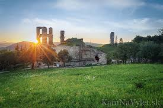
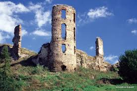
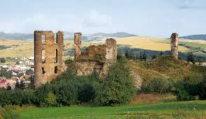
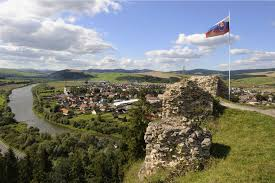
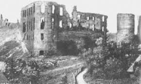
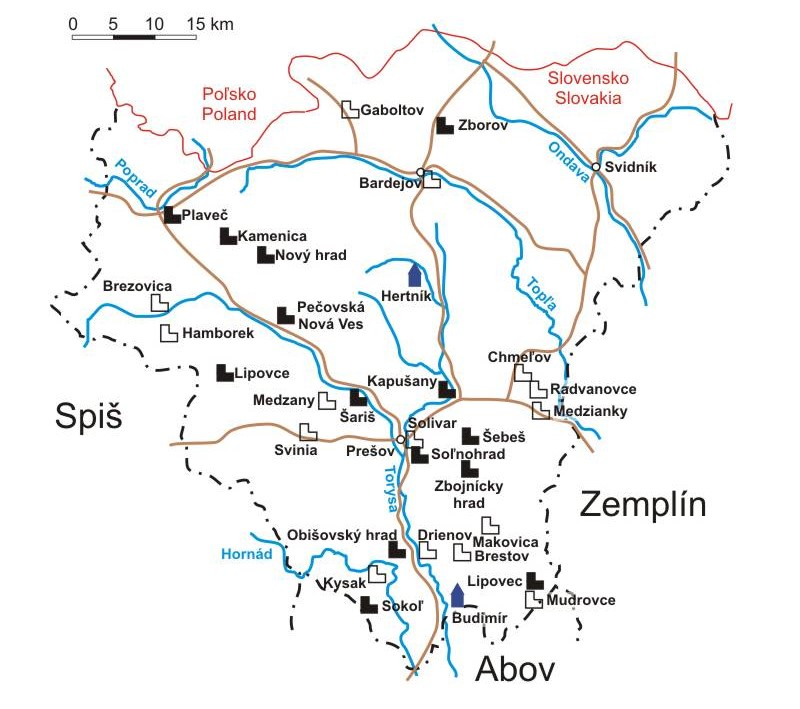

Plaveč (hrad)
Plaveč je zrúcanina hradu na miernom návrší nad obcou Plaveč v okrese Stará Ľubovňa v Prešovskom kraji.
História
Hrad bol postavený okolo roku 1294 ako pohraničná pevnosť. Na vlastné náklady ho dal vybudovať šľachtic Arnold, syn Ditricha zo Spiša. Od začiatku bol vymurovaný z kameňa. Za svoje meno vďačí pravdepodobne kmeňu Polovcov (Plavcov), ktorých uhorskí králi v 11. - 12. storočí za účelom obrany hraníc pozývali do pohraničných oblastí Uhorska. Ako kráľovský hrad ho Karol I. Róbert z Anjou daroval v r. 1317 spolu s panstvom Drugethovcom a po vymretí rodu v roku 1366 ho kráľ Žigmund Luxemburský dal do držby Bebekovcom, ktorí okolo r. 1427 boli trvalými vlastníkmi plavečského panstva.
V druhej polovici 15. storočia počas husitských bojov sa hradu zmocnili bratríci na čele s vodcom Petrom Aksamitom. Ten ho mal vo svojej moci až do svojej smrti r. 1458. Po ňom hrad dostal nových majiteľov Zápoľských, ktorí ho dali nanovo opevniť. R. 1505 sa kúpou dostal hrad do vlastníctva rodu Horváthovcov (podľa mena obce sa začali písať Horváthovci-Palocsayovci).
Počas povstania Juraja I. Rakóciho bol hrad na strane vzbúrencov. V 18. storočí, keď stratil vojenský význam, Paloczayovci ho doplnili obytnými budovami a upravili na pohodlné bývanie natoľko, že sa v roku 1715 v zmysle nariadenia cisára Karola VI. o demolácii hradov vyhol zbúraniu, pretože bol uznaný, že má charakter obytného objektu. Pri adaptácii r. 1830 bola narušená statika, Paloczayovci hrad opustili a presťahovali sa do kaštieľa, ktorý si postavili pri Plavči. V roku 1857 rod vymrel, no ešte rok predtým hrad postihol ničivý požiar. Odvtedy hrad pustne.




Rytina

Odkaz na hrad Plaveč
Plaveč na mape Slovenska

5 najbližších hradov k hradu Plaveč
- Kamenický hrad = 18km
- Hrad Stará Ľubovňa = 21km
- Hrad Holumnica = 38km
- Šarišský hrad = 47km
- Hrad Lipovce = 55km